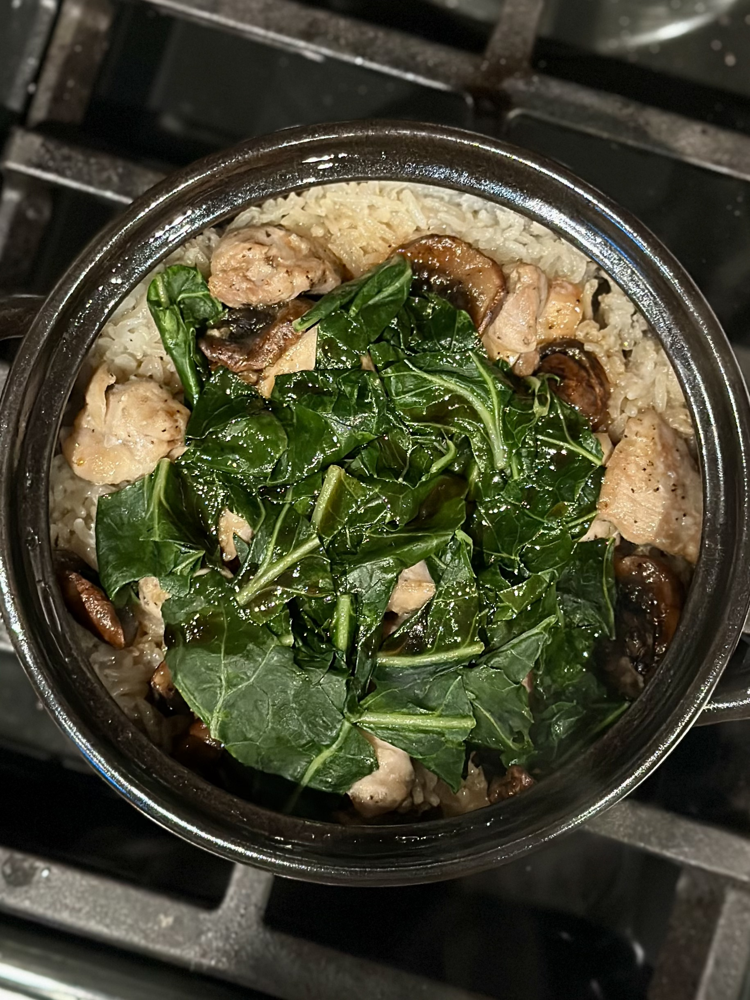
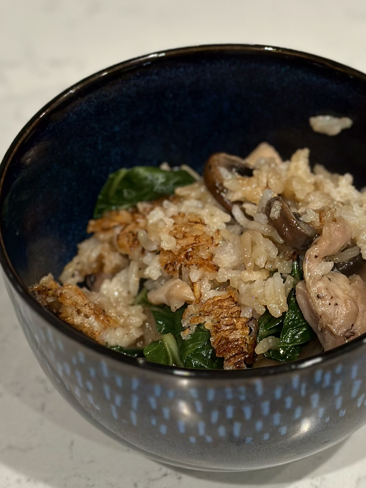
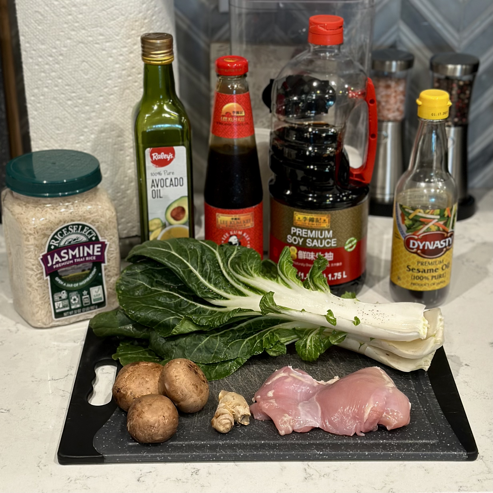
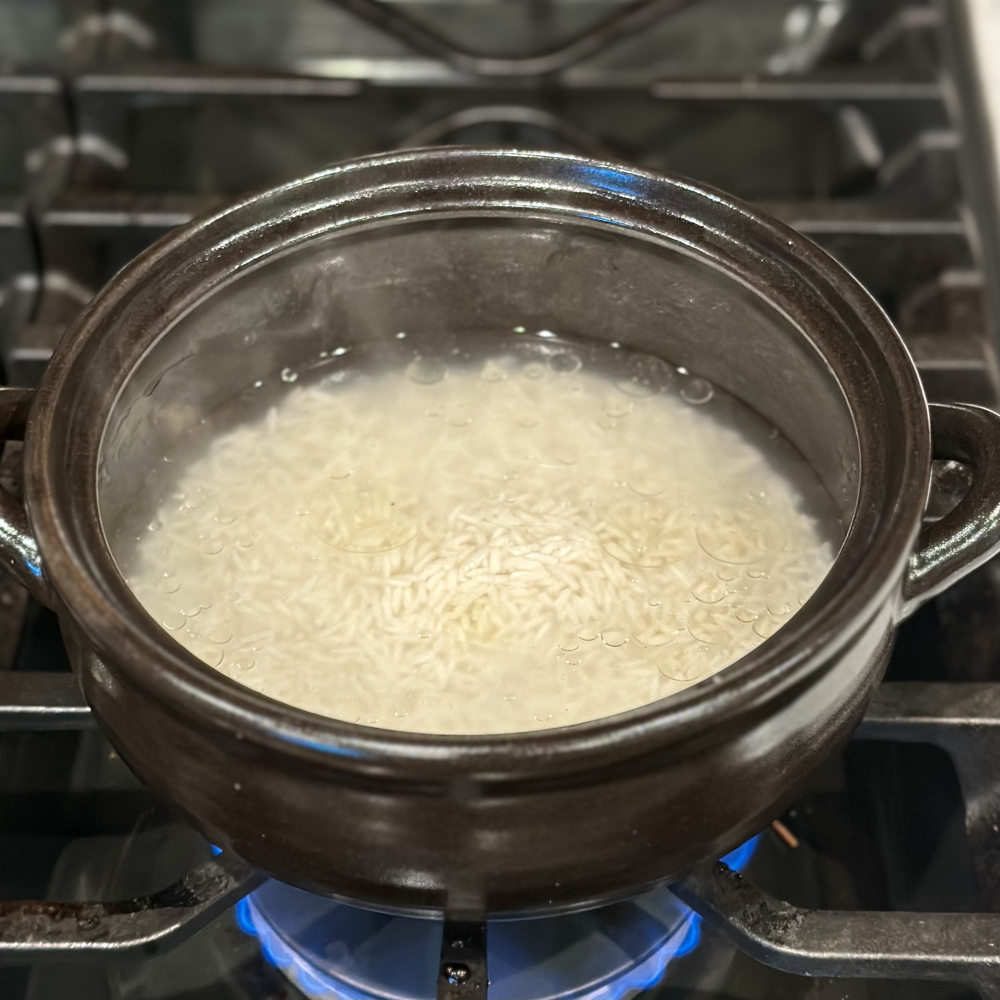
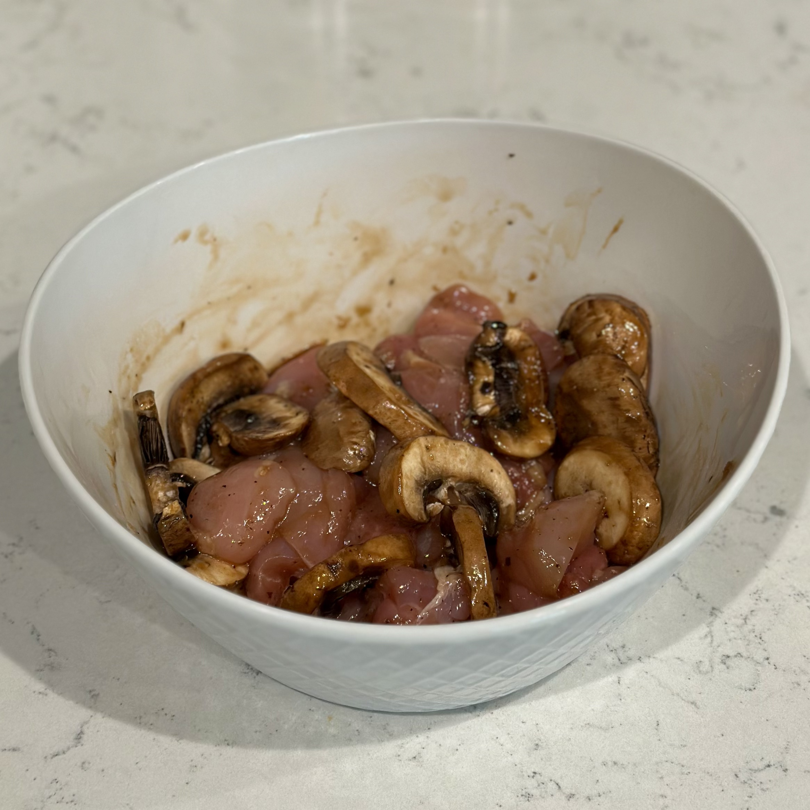
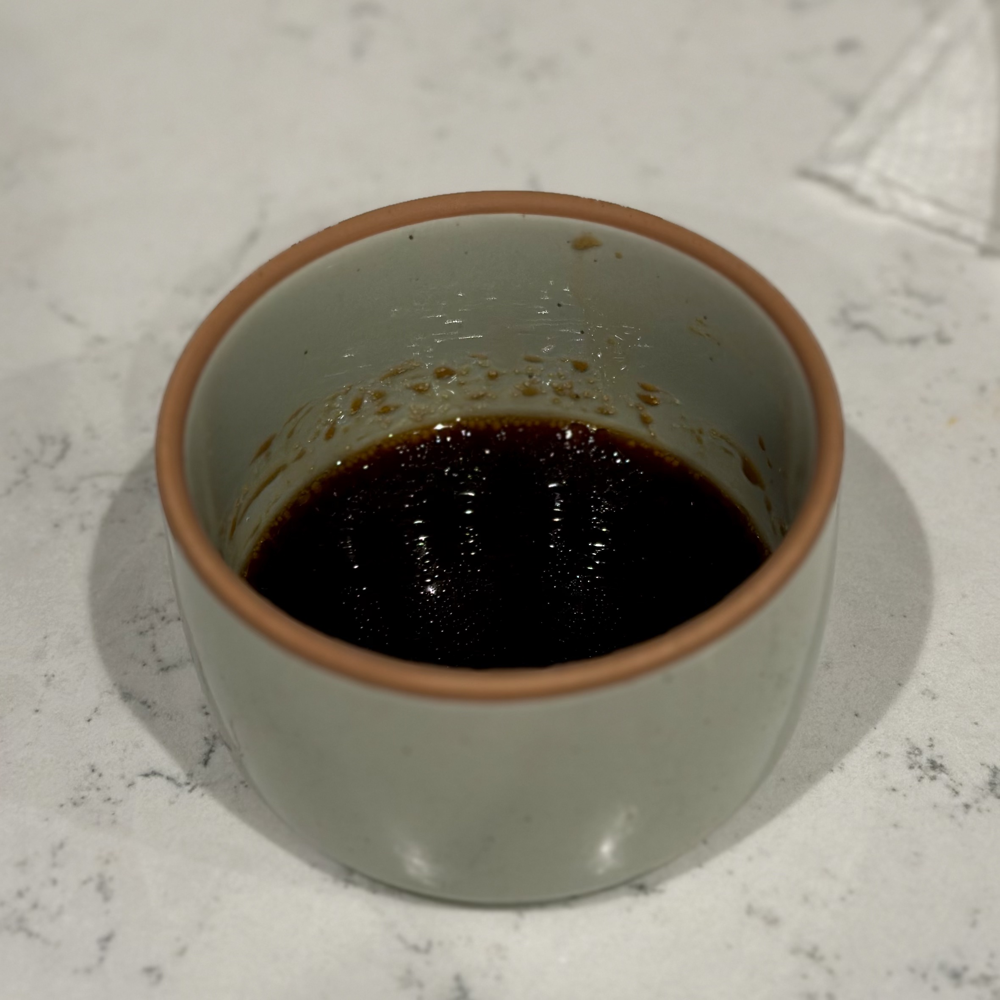
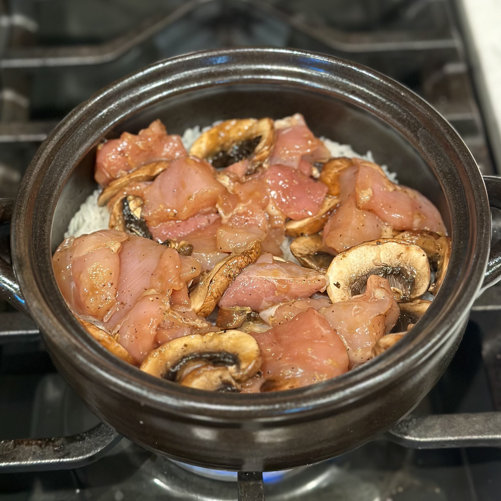
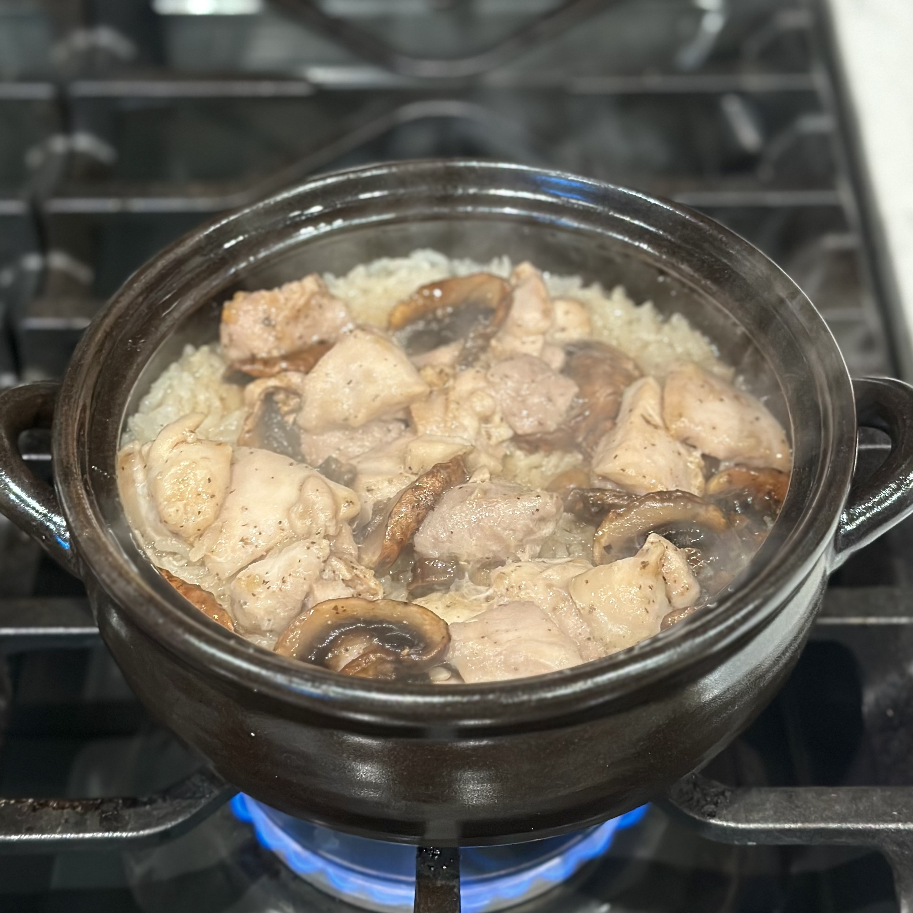
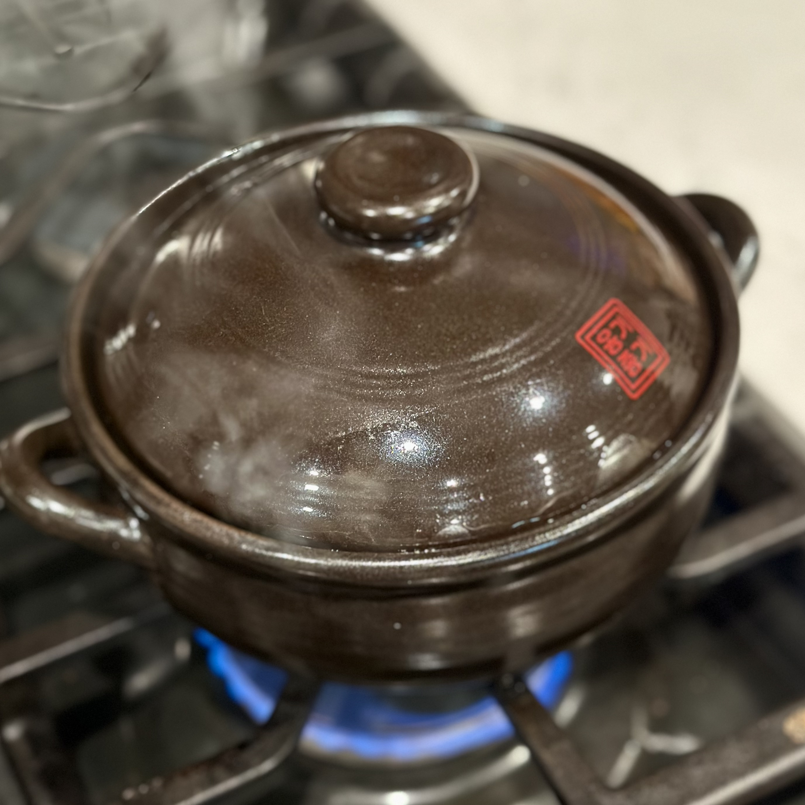
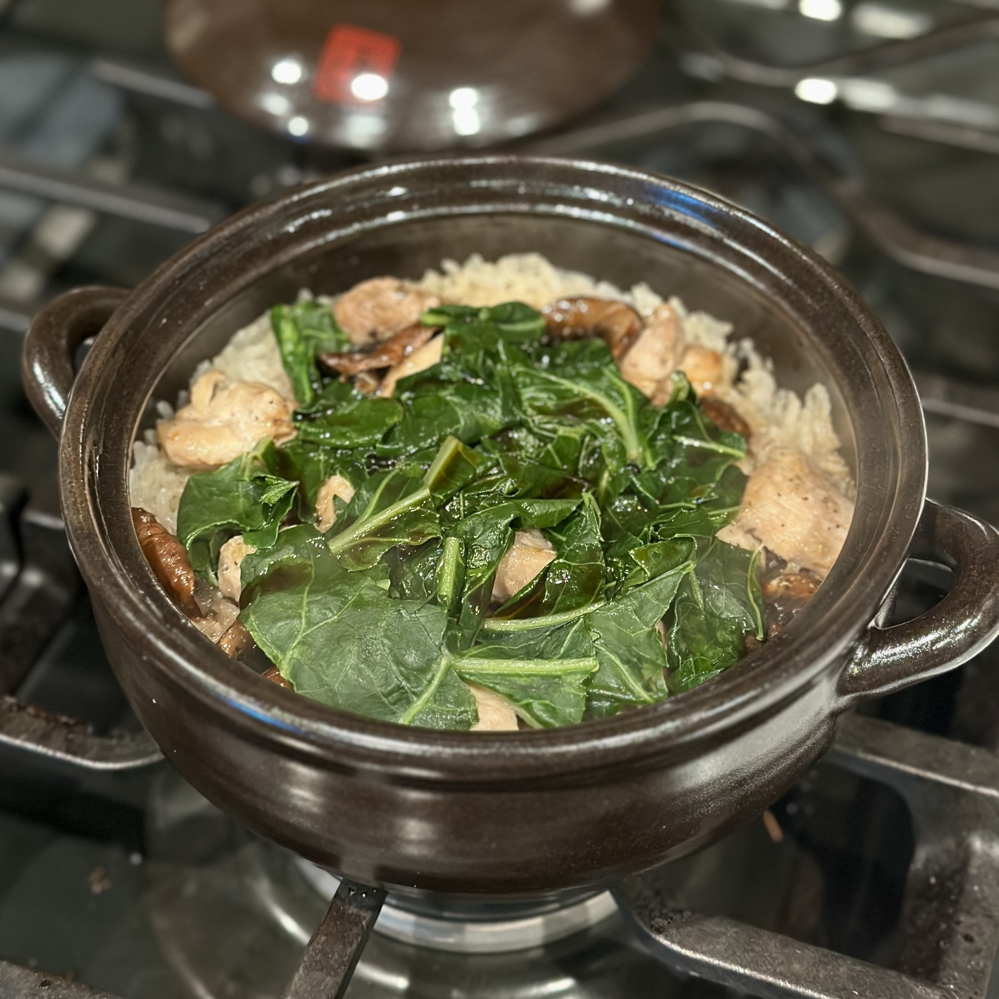

Bo zai fan.

Served bo zai fan.
Overview
What is bo zai fan?
Bo zai fan (煲仔飯, pronounced "boh-jai-fahn"), commonly translated as clay pot rice, is a Cantonese rice dish associated with Guangdong and Hong Kong. Its name comes from the small clay pot, or bo zai, in which the dish is traditionally cooked and served. Rice is cooked directly in the pot with meat, seafood, vegetables, or other toppings added as it cooks. The ingredients steam above the rice while their juices and seasonings flavor the grains below.
One of the defining characteristics of bo zai fan is the contrast in texture throughout the pot. The rice on top remains tender and fluffy, while the rice touching the hot clay develops into a toasted, crispy layer. The finished dish is often seasoned with a soy-based sauce and served directly from the pot in which it was cooked.
Origin and History
Bo zai fan belongs to the culinary traditions of Guangdong in southern China and became particularly prominent in Hong Kong. Traditionally, the individual clay pots were cooked over charcoal, which provided intense direct heat and contributed a subtle smoky character to the finished rice. The dish eventually became closely associated with Hong Kong's casual restaurants and street food culture.
Clay pot rice is especially associated with cooler weather. In Hong Kong, it has traditionally been considered an autumn and winter comfort food, when rows of clay pots can be cooked individually over open flames. The dish became increasingly popular during the late twentieth century; Michelin notes that by the 1980s, clay pot rice had become one of Hong Kong's major popular foods alongside congee and cheong fun.
The Clay Pot
The clay pot is more than just a serving vessel. Because the rice is cooked and served in the same pot, heat from the bottom and sides cooks the rice while also creating its characteristic toasted exterior. Traditional preparations use direct heat, historically from charcoal, although gas burners are now common and home versions can be adapted to other cookware.
Fan Jiu: The Crispy Rice
One of the most prized parts of bo zai fan is fan jiu (飯焦), the golden, toasted layer of rice that forms where the rice comes into contact with the hot pot. Rather than being considered burnt or overcooked rice, this crust is deliberately developed and provides a crisp contrast to the softer rice above it.
Developing the crust requires controlling the heat carefully enough to toast the bottom without burning it. When served, the crispy rice can be scraped from the bottom and eaten alongside the softer rice, meat, vegetables, and sauce.
Variations
Bo zai fan is less a single fixed combination of ingredients than a cooking style that can accommodate many different toppings. Common versions include Chinese sausage (lap cheong), marinated chicken, pork ribs, salted fish, and other meats or seafood. Vegetables such as bok choy are also frequently served alongside the rice.
Chicken and Chinese sausage are especially common combinations, but the flexibility of the dish means that ingredients vary considerably between restaurants and households. What ties these versions together is the technique: rice and toppings cooked together in a small pot, with the ingredients flavoring the rice and a toasted crust developing underneath.
Recipe
Ingredients
Rice
- 150 g jasmine rice
- 200 g water
- 3 tsp neutral oil
- 1 bok choy, chopped
Chicken and Mushrooms
- 1 small chicken thigh, about 175 g
- 3 shiitake mushrooms, sliced
- 2 tsp soy sauce
- 1 tsp oyster sauce
- 1/2 tsp sesame oil
- 1/2 tsp sugar
- 1 tsp Shaoxing wine
- 1/2 tsp cornstarch
- 1/2 tsp ginger, grated
- White pepper to taste
Finishing Sauce
- 1 1/2 tbsp soy sauce
- 1 tsp oyster sauce
- 1 tsp sugar
- 1/2 tsp sesame oil
Directions
- Clean the rice and add it to your clay pot. Fill the pot with enough water to cover the rice and let soak for 20 minutes.
- While the rice is soaking, mix the chicken and mushrooms with their ingredients until they are completely coated. Let marinate for 20 minutes.
- While you are waiting, you can mix the ingredients to make your finishing sauce and set it aside for later.
- Once the rice has finished soaking, drain and add one teaspoon of neutral oil, stirring until evenly mixed. Add 200 grams of water and place the pot over medium heat until the water starts to boil.
- When the water begins to boil, stir once, including the rice at the bottom of the pot. Then, cover, reduce the heat to low, and let cook for 5 minutes.
- Add the chicken and mushrooms to the top of the rice without mixing. The rice should have absorbed much of the water but should not be fully cooked. Cover and cook for 10-12 minutes or until the chicken is fully cooked.
- Drizzle two teaspoons of oil down the inside walls of the pot. Cover and cook on medium-low for 3-4 minutes. You should hear a subtle crackling sound from the bottom of the pot.
- Add fresh or blanched bok choy and top with the finishing sauce. Cover, remove from heat, and let rest for 5-10 minutes before serving.[1]
Notes
- As you eat, use a wooden spoon to scrape the crisped rice off the sides and bottom of the pot.








See Also
 Char Siu
Char Siu
 Kimchi JJigae
Kimchi JJigae
 Mapo Tofu
Mapo Tofu
References
- Lam, Weng Hong. “MICHELIN-Starred Claypot Rice: A Sizzling Story of Golden Crispiness.” MICHELIN Guide, 21 Nov. 2022, guide.michelin.com/hk/en/article/dining-in/hong-kong-michelin-starred-claypot-rice. Accessed 9 Sept. 2026.
- Yen, Diana. “Bo Zai Fan (Chinese Chicken and Mushroom Clay Pot Rice).” Bon Appétit, 1 Mar. 2021, bonappetit.com/recipe/bo-zai-fan-chinese-chicken-and-mushroom-clay-pot-rice. Accessed 9 Sept. 2026.